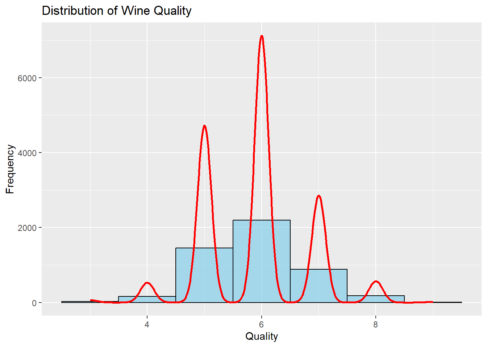
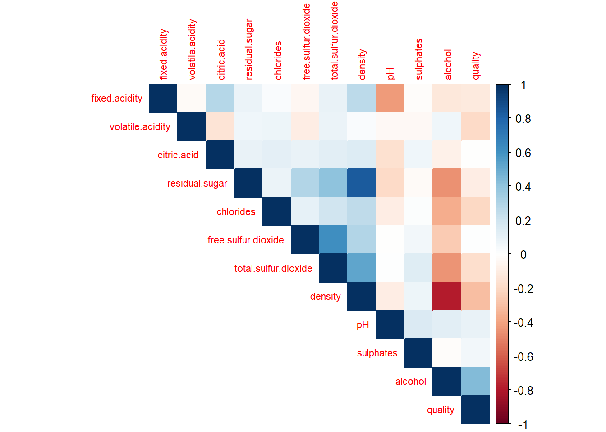
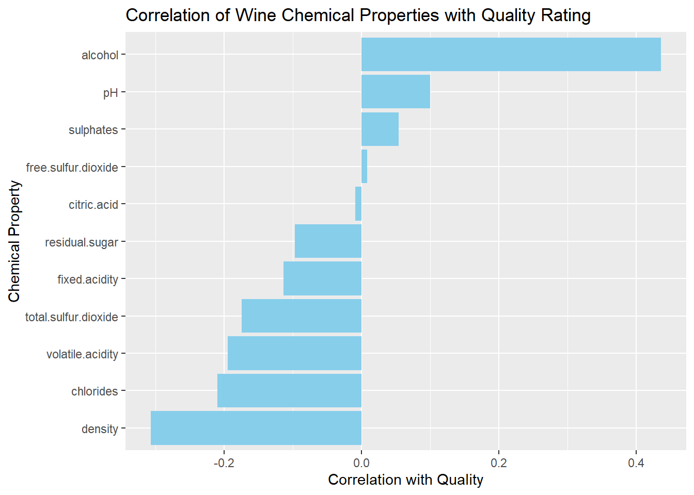
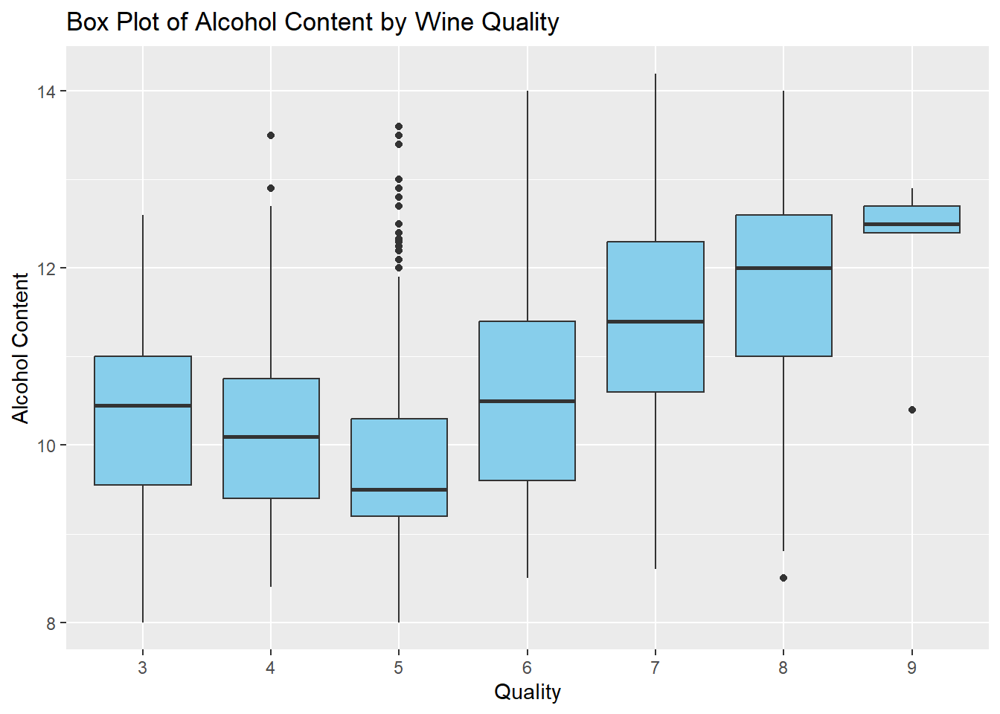
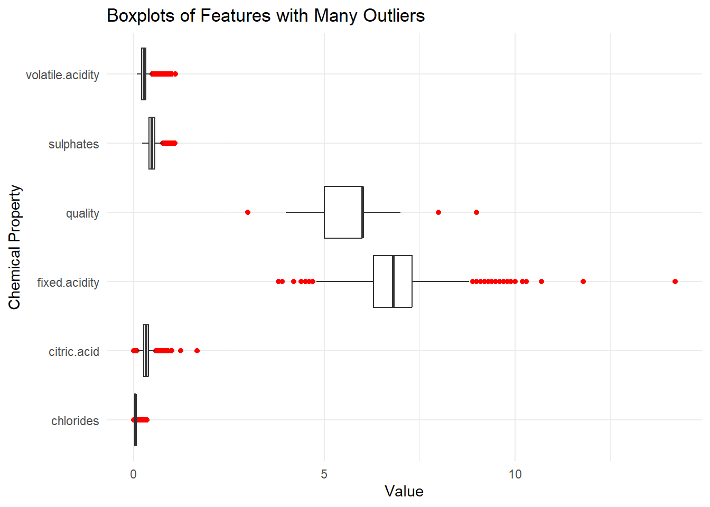
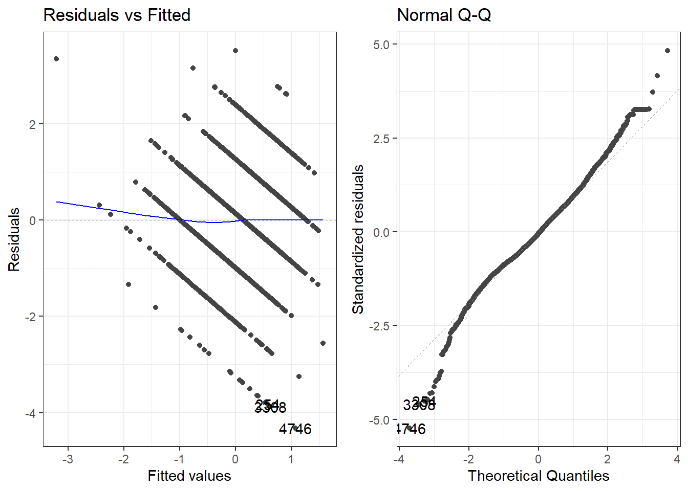
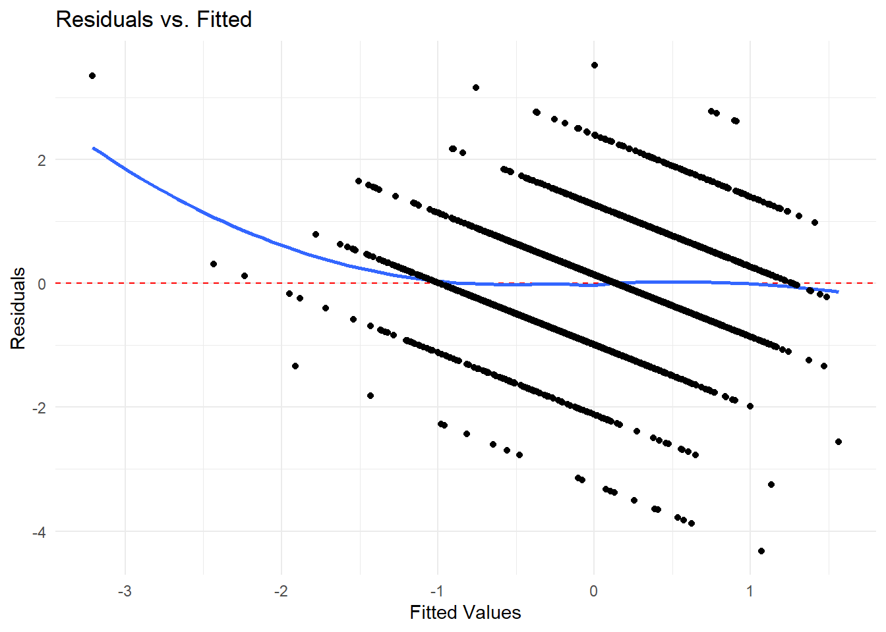

Code
# Load required libraries
library(tidyverse)
library(corrplot)
library(caret)
# Read in the dataset
wine_data <- read.csv("Wine datasets/winequality-white.csv", sep=";")
num_observations <- nrow(wine_data)# Load required libraries
library(tidyverse)
library(corrplot)
library(caret)
# Read in the dataset
wine_data <- read.csv("Wine datasets/winequality-white.csv", sep=";")
num_observations <- nrow(wine_data)This analysis aims to investigate the factors influencing the quality of white wine by examining various chemical properties. The goal is to identify the characteristics most strongly associated with higher quality ratings, which can provide insights into optimizing wine production.
The dataset contains 4898 observations of white wine samples, with measurements for several chemical properties. The full list of variables includes:
Quality Rating(target variable)Through model selection tests(described in later sections), several key variables are identified and marked in bold text.
To begin the analysis, we first visualized the distribution of the dependent variable quality. To accurately interpret and analyse the target variable, one needs to understand its spread and central tendency.
ggplot(wine_data, aes(x = quality)) +
geom_histogram(binwidth = 1, fill = "skyblue", color = "black", alpha = 0.7) +
geom_density(aes(y= ..count..), color = "red", size = 1) +
labs(title = "Distribution of Wine Quality", x = "Quality", y = "Frequency")
# Correlation matrix
cor_matrix <- cor(wine_data[, sapply(wine_data, is.numeric)])
corrplot(cor_matrix, method = "color", type = "upper", tl.cex = 0.7)
The following bar chart shows the correlation of each chemical property with the wine quality. This analysis highlights which features are more strongly associated with the quality rating, indicating their potential importance in predicting wine quality.
# Calculate correlations with the quality variable
cor_with_quality <- wine_data %>%
select(-quality) %>%
summarise(across(everything(), ~ cor(., wine_data$quality, use = "complete.obs"))) %>%
pivot_longer(cols = everything(), names_to = "Variable", values_to = "Correlation")
# Plot correlations with quality
ggplot(cor_with_quality, aes(x = reorder(Variable, Correlation), y = Correlation)) +
geom_bar(stat = "identity", fill = "skyblue") +
coord_flip() +
labs(title = "Correlation of Wine Chemical Properties with Quality Rating",
x = "Chemical Property",
y = "Correlation with Quality")
Variables such as alcohol content and density have strong correlations with quality, while cirtic acid and free sulphur dioxide have little correlation.
We will take a brief look at alcohol content here. A box plot is used to visualize the distribution of alcohol content across different quality ratings.
ggplot(wine_data, aes(x = factor(quality), y = alcohol)) +
geom_boxplot(fill = "skyblue") +
labs(title = "Box Plot of Alcohol Content by Wine Quality", x = "Quality" , y = "Alcohol Content")
Wines with higher quality incline to have higher alcohol content, and the variability in alcohol content decreases as quality increases.
# Check for missing values
missing_values <- colSums(is.na(wine_data))
cat("Number of missing values in each column:\n")
print(missing_values)
# Detect outliers using the Interquartile Range (IQR) method
identify_outliers <- function(column) {
Q1 <- quantile(column, 0.25, na.rm = TRUE)
Q3 <- quantile(column, 0.75, na.rm = TRUE)
IQR <- Q3 - Q1
lower_bound <- Q1 - 1.5 * IQR
upper_bound <- Q3 + 1.5 * IQR
sum(column < lower_bound | column > upper_bound, na.rm = TRUE)
}
outlier_counts <- sapply(wine_data[, sapply(wine_data, is.numeric)], identify_outliers)
cat("\nNumber of outliers in each numeric column:\n")
print(outlier_counts)The dataset is nicely formatted and does not contain any missing values. However, several features exhibit a significant number of outliers(according to the IQR method), as visualized in the boxplot below.
# List of columns with many outliers
columns_with_outliers <- c("fixed.acidity", "volatile.acidity", "citric.acid",
"chlorides", "sulphates", "quality")
# Plot boxplots for these columns
wine_data_long <- wine_data %>%
select(all_of(columns_with_outliers)) %>%
pivot_longer(cols = everything(), names_to = "Variable", values_to = "Value")
# Create boxplots to visualize outliers
ggplot(wine_data_long, aes(x = Variable, y = Value)) +
geom_boxplot(outlier.color = "red", outlier.shape = 16) +
coord_flip() +
labs(title = "Boxplots of Features with Many Outliers",
x = "Chemical Property",
y = "Value") +
theme_minimal()
Outliers can affect the accuracy of regression analysis models. However, in this case, the data represents chemical properties in alcohol, where extreme values are expected and can provide valuable insights. Additionally, the number of outliers is relatively small compared to the total dataset (~200 out of ~5000), so we have decided to keep them as meaningful observations.
For this analysis, we did not create any new variables because the existing chemical properties already provide a comprehensive view of the data.
# Standardize all numeric features (mean = 0, standard deviation = 1)
numeric_vars <- wine_data %>%
select(where(is.numeric)) %>%
names()
wine_data_normalised <- wine_data %>%
mutate(across(all_of(numeric_vars), scale))To prepare the data for regression modeling, we normalized the data:
This analysis uses a multiple linear regression model to predict wine quality a number of predictor variables. We aim to quantify the simultaneous impact of both predictors on the response variable (white wine quality).
To determine which predictor variables are suitable for our model, we will perform three tests - an exhaustive search, backwards selection using AIC criterion and forwards selection using AIC criterion. We will then compare the results from these three searches and build our final model, which will then be tested using cross validation to assess the performance and fit of the model.
# Load necessary libraries
library(ggplot2)
# Fit the linear model
model <- lm(quality ~ ., data = wine_data_normalised)
# Summary of the model
summary(model)
Call:
lm(formula = quality ~ ., data = wine_data_normalised)
Residuals:
Min 1Q Median 3Q Max
-4.3299 -0.5571 -0.0428 0.5235 3.5164
Coefficients:
Estimate Std. Error t value Pr(>|t|)
(Intercept) -3.668e-15 1.212e-02 0.000 1.00000
fixed.acidity 6.243e-02 1.989e-02 3.139 0.00171 **
volatile.acidity -2.120e-01 1.295e-02 -16.373 < 2e-16 ***
citric.acid 3.019e-03 1.309e-02 0.231 0.81759
residual.sugar 4.667e-01 4.311e-02 10.825 < 2e-16 ***
chlorides -6.100e-03 1.348e-02 -0.452 0.65097
free.sulfur.dioxide 7.168e-02 1.621e-02 4.422 9.99e-06 ***
total.sulfur.dioxide -1.371e-02 1.814e-02 -0.756 0.44979
density -5.075e-01 6.442e-02 -7.879 4.04e-15 ***
pH 1.170e-01 1.797e-02 6.513 8.10e-11 ***
sulphates 8.137e-02 1.294e-02 6.291 3.44e-10 ***
alcohol 2.688e-01 3.366e-02 7.988 1.70e-15 ***
---
Signif. codes: 0 '***' 0.001 '**' 0.01 '*' 0.05 '.' 0.1 ' ' 1
Residual standard error: 0.8484 on 4886 degrees of freedom
Multiple R-squared: 0.2819, Adjusted R-squared: 0.2803
F-statistic: 174.3 on 11 and 4886 DF, p-value: < 2.2e-16# Load necessary libraries
library(leaps)
# Perform exhaustive search
full_model <- regsubsets(quality ~ ., data = wine_data_normalised, nbest = 1, method = "exhaustive")
# Get summary of results
results <- summary(full_model)
# Display adjusted R-squared values
print(results$adjr2)[1] 0.1895598 0.2399208 0.2580716 0.2633925 0.2703282 0.2757705 0.2790891
[8] 0.2805767# Select the best model based on adjusted R-squared
best_model_index <- which.max(results$adjr2)
best_model <- results$which[best_model_index, ]
# Display best model
print(best_model) (Intercept) fixed.acidity volatile.acidity
TRUE TRUE TRUE
citric.acid residual.sugar chlorides
FALSE TRUE FALSE
free.sulfur.dioxide total.sulfur.dioxide density
TRUE FALSE TRUE
pH sulphates alcohol
TRUE TRUE TRUE step.back.aic = step(model, direction = "backward",
trace = TRUE) #Backward selectionStart: AIC=-1598.75
quality ~ fixed.acidity + volatile.acidity + citric.acid + residual.sugar +
chlorides + free.sulfur.dioxide + total.sulfur.dioxide +
density + pH + sulphates + alcohol
Df Sum of Sq RSS AIC
- citric.acid 1 0.038 3516.7 -1600.7
- chlorides 1 0.147 3516.8 -1600.5
- total.sulfur.dioxide 1 0.411 3517.1 -1600.2
<none> 3516.7 -1598.8
- fixed.acidity 1 7.091 3523.8 -1590.9
- free.sulfur.dioxide 1 14.074 3530.8 -1581.2
- sulphates 1 28.481 3545.2 -1561.2
- pH 1 30.532 3547.2 -1558.4
- density 1 44.679 3561.4 -1538.9
- alcohol 1 45.924 3562.6 -1537.2
- residual.sugar 1 84.339 3601.0 -1484.7
- volatile.acidity 1 192.954 3709.6 -1339.1
Step: AIC=-1600.7
quality ~ fixed.acidity + volatile.acidity + residual.sugar +
chlorides + free.sulfur.dioxide + total.sulfur.dioxide +
density + pH + sulphates + alcohol
Df Sum of Sq RSS AIC
- chlorides 1 0.133 3516.9 -1602.5
- total.sulfur.dioxide 1 0.402 3517.1 -1602.1
<none> 3516.7 -1600.7
- fixed.acidity 1 7.330 3524.0 -1592.5
- free.sulfur.dioxide 1 14.146 3530.9 -1583.0
- sulphates 1 28.614 3545.3 -1563.0
- pH 1 30.562 3547.3 -1560.3
- density 1 44.706 3561.4 -1540.8
- alcohol 1 46.586 3563.3 -1538.2
- residual.sugar 1 84.349 3601.1 -1486.6
- volatile.acidity 1 199.916 3716.6 -1331.9
Step: AIC=-1602.51
quality ~ fixed.acidity + volatile.acidity + residual.sugar +
free.sulfur.dioxide + total.sulfur.dioxide + density + pH +
sulphates + alcohol
Df Sum of Sq RSS AIC
- total.sulfur.dioxide 1 0.408 3517.3 -1604.0
<none> 3516.9 -1602.5
- fixed.acidity 1 7.850 3524.7 -1593.6
- free.sulfur.dioxide 1 14.070 3530.9 -1585.0
- sulphates 1 28.776 3545.6 -1564.6
- pH 1 32.252 3549.1 -1559.8
- alcohol 1 46.581 3563.4 -1540.1
- density 1 46.947 3563.8 -1539.6
- residual.sugar 1 89.416 3606.3 -1481.5
- volatile.acidity 1 202.131 3719.0 -1330.8
Step: AIC=-1603.95
quality ~ fixed.acidity + volatile.acidity + residual.sugar +
free.sulfur.dioxide + density + pH + sulphates + alcohol
Df Sum of Sq RSS AIC
<none> 3517.3 -1604.0
- fixed.acidity 1 7.994 3525.3 -1594.8
- free.sulfur.dioxide 1 17.627 3534.9 -1581.5
- sulphates 1 28.435 3545.7 -1566.5
- pH 1 32.459 3549.7 -1561.0
- alcohol 1 46.280 3563.5 -1541.9
- density 1 50.896 3568.2 -1535.6
- residual.sugar 1 92.997 3610.3 -1478.1
- volatile.acidity 1 213.874 3731.1 -1316.8summary(step.back.aic)
Call:
lm(formula = quality ~ fixed.acidity + volatile.acidity + residual.sugar +
free.sulfur.dioxide + density + pH + sulphates + alcohol,
data = wine_data_normalised)
Residuals:
Min 1Q Median 3Q Max
-4.3185 -0.5576 -0.0447 0.5262 3.5237
Coefficients:
Estimate Std. Error t value Pr(>|t|)
(Intercept) -3.753e-15 1.212e-02 0.000 1.000000
fixed.acidity 6.489e-02 1.947e-02 3.333 0.000864 ***
volatile.acidity -2.149e-01 1.246e-02 -17.242 < 2e-16 ***
residual.sugar 4.745e-01 4.173e-02 11.370 < 2e-16 ***
free.sulfur.dioxide 6.431e-02 1.299e-02 4.950 7.67e-07 ***
density -5.211e-01 6.195e-02 -8.411 < 2e-16 ***
pH 1.184e-01 1.762e-02 6.717 2.07e-11 ***
sulphates 8.099e-02 1.288e-02 6.287 3.52e-10 ***
alcohol 2.684e-01 3.346e-02 8.021 1.31e-15 ***
---
Signif. codes: 0 '***' 0.001 '**' 0.01 '*' 0.05 '.' 0.1 ' ' 1
Residual standard error: 0.8482 on 4889 degrees of freedom
Multiple R-squared: 0.2818, Adjusted R-squared: 0.2806
F-statistic: 239.7 on 8 and 4889 DF, p-value: < 2.2e-16# Full model (with all predictors)
full_model <- lm(quality ~ ., data = wine_data_normalised)
# Empty model (just the intercept)
empty_model <- lm(quality ~ 1, data = wine_data_normalised)
# Perform forward selection
forward_model <- step(empty_model,
scope = list(lower = empty_model, upper = full_model),
direction = "forward", trace = TRUE)Start: AIC=1
quality ~ 1
Df Sum of Sq RSS AIC
+ alcohol 1 929.08 3967.9 -1027.45
+ density 1 461.91 4435.1 -482.27
+ chlorides 1 215.82 4681.2 -217.77
+ volatile.acidity 1 185.68 4711.3 -186.33
+ total.sulfur.dioxide 1 149.52 4747.5 -148.88
+ fixed.acidity 1 63.27 4833.7 -60.69
+ pH 1 48.41 4848.6 -45.66
+ residual.sugar 1 46.63 4850.4 -43.86
+ sulphates 1 14.11 4882.9 -11.13
<none> 4897.0 1.00
+ citric.acid 1 0.42 4896.6 2.58
+ free.sulfur.dioxide 1 0.33 4896.7 2.67
Step: AIC=-1027.45
quality ~ alcohol
Df Sum of Sq RSS AIC
+ volatile.acidity 1 247.327 3720.6 -1340.7
+ free.sulfur.dioxide 1 71.627 3896.3 -1114.7
+ residual.sugar 1 59.869 3908.0 -1099.9
+ fixed.acidity 1 18.498 3949.4 -1048.3
+ sulphates 1 18.390 3949.5 -1048.2
+ chlorides 1 15.833 3952.1 -1045.0
+ density 1 13.367 3954.5 -1042.0
+ pH 1 10.763 3957.2 -1038.8
+ citric.acid 1 2.784 3965.1 -1028.9
+ total.sulfur.dioxide 1 2.650 3965.3 -1028.7
<none> 3967.9 -1027.5
Step: AIC=-1340.68
quality ~ alcohol + volatile.acidity
Df Sum of Sq RSS AIC
+ residual.sugar 1 89.590 3631.0 -1458.1
+ free.sulfur.dioxide 1 51.615 3669.0 -1407.1
+ density 1 32.688 3687.9 -1381.9
+ fixed.acidity 1 20.538 3700.1 -1365.8
+ total.sulfur.dioxide 1 14.235 3706.4 -1357.5
+ sulphates 1 14.032 3706.6 -1357.2
+ pH 1 6.998 3713.6 -1347.9
+ chlorides 1 5.703 3714.9 -1346.2
<none> 3720.6 -1340.7
+ citric.acid 1 0.384 3720.2 -1339.2
Step: AIC=-1458.07
quality ~ alcohol + volatile.acidity + residual.sugar
Df Sum of Sq RSS AIC
+ free.sulfur.dioxide 1 26.7771 3604.2 -1492.3
+ density 1 26.5274 3604.5 -1492.0
+ fixed.acidity 1 24.2256 3606.8 -1488.9
+ pH 1 17.2460 3613.8 -1479.4
+ sulphates 1 16.6604 3614.3 -1478.6
+ total.sulfur.dioxide 1 2.4242 3628.6 -1459.3
+ chlorides 1 2.0892 3628.9 -1458.9
+ citric.acid 1 2.0244 3629.0 -1458.8
<none> 3631.0 -1458.1
Step: AIC=-1492.32
quality ~ alcohol + volatile.acidity + residual.sugar + free.sulfur.dioxide
Df Sum of Sq RSS AIC
+ density 1 24.2761 3579.9 -1523.4
+ fixed.acidity 1 19.7568 3584.5 -1517.2
+ pH 1 14.6252 3589.6 -1510.2
+ sulphates 1 14.1361 3590.1 -1509.6
+ total.sulfur.dioxide 1 3.0721 3601.1 -1494.5
+ chlorides 1 2.8274 3601.4 -1494.2
+ citric.acid 1 2.8184 3601.4 -1494.2
<none> 3604.2 -1492.3
Step: AIC=-1523.42
quality ~ alcohol + volatile.acidity + residual.sugar + free.sulfur.dioxide +
density
Df Sum of Sq RSS AIC
+ pH 1 30.5110 3549.4 -1563.3
+ sulphates 1 28.3332 3551.6 -1560.3
+ fixed.acidity 1 5.3085 3574.6 -1528.7
+ chlorides 1 1.8024 3578.1 -1523.9
<none> 3579.9 -1523.4
+ citric.acid 1 0.5495 3579.4 -1522.2
+ total.sulfur.dioxide 1 0.1074 3579.8 -1521.6
Step: AIC=-1563.35
quality ~ alcohol + volatile.acidity + residual.sugar + free.sulfur.dioxide +
density + pH
Df Sum of Sq RSS AIC
+ sulphates 1 24.1788 3525.3 -1594.8
+ fixed.acidity 1 3.7379 3545.7 -1566.5
<none> 3549.4 -1563.3
+ chlorides 1 0.7112 3548.7 -1562.3
+ citric.acid 1 0.2846 3549.1 -1561.7
+ total.sulfur.dioxide 1 0.1264 3549.3 -1561.5
Step: AIC=-1594.83
quality ~ alcohol + volatile.acidity + residual.sugar + free.sulfur.dioxide +
density + pH + sulphates
Df Sum of Sq RSS AIC
+ fixed.acidity 1 7.9938 3517.3 -1604.0
<none> 3525.3 -1594.8
+ chlorides 1 0.6771 3524.6 -1593.8
+ total.sulfur.dioxide 1 0.5518 3524.7 -1593.6
+ citric.acid 1 0.1805 3525.1 -1593.1
Step: AIC=-1603.95
quality ~ alcohol + volatile.acidity + residual.sugar + free.sulfur.dioxide +
density + pH + sulphates + fixed.acidity
Df Sum of Sq RSS AIC
<none> 3517.3 -1604.0
+ total.sulfur.dioxide 1 0.40828 3516.9 -1602.5
+ chlorides 1 0.13982 3517.1 -1602.1
+ citric.acid 1 0.01655 3517.2 -1602.0summary(forward_model)
Call:
lm(formula = quality ~ alcohol + volatile.acidity + residual.sugar +
free.sulfur.dioxide + density + pH + sulphates + fixed.acidity,
data = wine_data_normalised)
Residuals:
Min 1Q Median 3Q Max
-4.3185 -0.5576 -0.0447 0.5262 3.5237
Coefficients:
Estimate Std. Error t value Pr(>|t|)
(Intercept) -3.753e-15 1.212e-02 0.000 1.000000
alcohol 2.684e-01 3.346e-02 8.021 1.31e-15 ***
volatile.acidity -2.149e-01 1.246e-02 -17.242 < 2e-16 ***
residual.sugar 4.745e-01 4.173e-02 11.370 < 2e-16 ***
free.sulfur.dioxide 6.431e-02 1.299e-02 4.950 7.67e-07 ***
density -5.211e-01 6.195e-02 -8.411 < 2e-16 ***
pH 1.184e-01 1.762e-02 6.717 2.07e-11 ***
sulphates 8.099e-02 1.288e-02 6.287 3.52e-10 ***
fixed.acidity 6.489e-02 1.947e-02 3.333 0.000864 ***
---
Signif. codes: 0 '***' 0.001 '**' 0.01 '*' 0.05 '.' 0.1 ' ' 1
Residual standard error: 0.8482 on 4889 degrees of freedom
Multiple R-squared: 0.2818, Adjusted R-squared: 0.2806
F-statistic: 239.7 on 8 and 4889 DF, p-value: < 2.2e-16Since all three methods came up with the same predictor variables to use, our final model becomes
model_final = lm(quality ~ alcohol + volatile.acidity + residual.sugar +
free.sulfur.dioxide + density + pH + sulphates + fixed.acidity, data = wine_data_normalised)\[ \begin{align*} \text{quality} &= \beta_0 + \beta_1\text{alcohol}_i + \beta_2\text{volatile\_acidity}_i + \beta_3\text{residual\_sugar}_i + \beta_4\text{free\_sulfur\_dioxide}_i \\ &\quad + \beta_5\text{density}_i + \beta_6\text{pH}_i + \beta_7\text{sulphates}_i + \beta_8\text{fixed\_acidity}_i + \varepsilon_i \end{align*} \]
# Load necessary library
library(caret)
# Define the cross-validation method (10-fold cross-validation)
train_control <- trainControl(method = "cv", number = 10)
# Train the model using the selected predictors from backward selection
model <- train(quality ~ alcohol + volatile.acidity + residual.sugar +
free.sulfur.dioxide + density + pH + sulphates + fixed.acidity,
data = wine_data_normalised,
method = "lm",
trControl = train_control)
# Display the cross-validated model output
print(model)Linear Regression
4898 samples
8 predictor
No pre-processing
Resampling: Cross-Validated (10 fold)
Summary of sample sizes: 4408, 4408, 4409, 4408, 4409, 4408, ...
Resampling results:
RMSE Rsquared MAE
0.8506895 0.2790206 0.6607611
Tuning parameter 'intercept' was held constant at a value of TRUEIt is important to take into account these three values - the RMSE and MAE are both indicators of error rates. These values indicate a reasonable degree of prediction accuracy since our response variable quality is measured in whole numbers, however there is still some error that is important to take into account when interpreting results.
The R-squared value indicates the proportion of variance explained by the model. Our R-squared indicates the model explains around 28% of data variance. This number is fairly low, however since all 3 of our variable selection processes indicated the same predictor variables, we are going to continue on with this model.
To create a linear regression model, we have 4 main assumptions: linearity, homoscedasiticity, normality, and independence. The assumptions of independence is assumed based on the data collection process - based on the nature of the wine quality data, being that it is not time-series based, we assume the errors are independent.
We can use a series of plots to investigate the other 3 assumptions.
library(ggfortify)
autoplot(model_final, which = 1:2) + theme_bw()
Linearity
We can assess linearity using the residuals vs fitted plot. From this plot we can see the linearity assumptions holds - there are no clear patterns in the way the data points are scattered about the y-axis. Whilst the data points are quite uniformly creating diagonal lines, this can be explained by quality being a discrete variable, which can lead to this data formation.
This is further seen through the addition of a smoothing line (blue), which remains relatively flat on the plot aside from the very beginning of the data points (where there is an outlier).
residuals_df <- data.frame(
Fitted = fitted(model_final),
Residuals = residuals(model_final)
)
p1 = ggplot(residuals_df, aes(x = Fitted, y = Residuals)) +
geom_point(alpha = 0.5) + # Scatter plot
geom_hline(yintercept = 0, linetype = "dashed", color = "red") + # Reference line at y=0
labs(title = "Residuals vs. Fitted",
x = "Fitted Values",
y = "Residuals") +
theme_minimal() +
geom_smooth(method = "loess",
se = FALSE) +
geom_jitter()
p1`geom_smooth()` using formula = 'y ~ x'
Homoscedasticity
Similar to linearity, we can assess homoscedasticity from the residuals vs fitted plot. From this plot we can see that whilst there is a little fanning going on, overall the data points are relatively spread out and thus we can say the assumption of homoscedasticity holds for this model.
Normality
We assess the assumption of normality through the QQ-plot from above. As we can see, the data points are pretty consistently following the line, and thus we can conclude the data follows a normal distribution.
To reiterate, our final model selection is:
\[ \begin{align*} \text{quality} &= \beta_0 + \beta_1\text{alcohol}_i + \beta_2\text{volatile\_acidity}_i + \beta_3\text{residual\_sugar}_i + \beta_4\text{free\_sulfur\_dioxide}_i \\ &\quad + \beta_5\text{density}_i + \beta_6\text{pH}_i + \beta_7\text{sulphates}_i + \beta_8\text{fixed\_acidity}_i + \varepsilon_i \end{align*} \]
We can gather our coefficients (\(\beta_j\)’s) using our model summary:
summary(model_final)$coefficients |> round(3) Estimate Std. Error t value Pr(>|t|)
(Intercept) 0.000 0.012 0.000 1.000
alcohol 0.268 0.033 8.021 0.000
volatile.acidity -0.215 0.012 -17.242 0.000
residual.sugar 0.474 0.042 11.370 0.000
free.sulfur.dioxide 0.064 0.013 4.950 0.000
density -0.521 0.062 -8.411 0.000
pH 0.118 0.018 6.717 0.000
sulphates 0.081 0.013 6.287 0.000
fixed.acidity 0.065 0.019 3.333 0.001These coefficients give us our prediction formula:
\[ \begin{align*} \text{quality} &= 0 + 0.268\text{alcohol} - 0.215\text{volatile\_acidity} + 0.474\text{residual\_sugar} + 0.064\text{free\_sulfur\_dioxide} \\ &\quad - 0.521\text{density} + 0.118\text{pH} + 0.081\text{sulphates} + 0.065\text{fixed\_acidity} \end{align*} \]
From this formula, we can conclude:
A pivotal limitation of this analysis is the relatively low R-squared value (28%), indicating that the model only explains a small portion of the variability in wine quality. This presents that important factors influencing quality—such as sensory attributes (taste, aroma, texture), production methods, or grape characteristics—are not captured in the dataset, which focuses solely on chemical properties. These omitted variables could have a significant impact on wine quality, underscoring the need for more comprehensive data that includes sensory evaluations and environmental factors like terroir and climate conditions.
Another limitation is the treatment of outliers. While outliers were identified and retained established on their potential relevance in the context of chemical properties, future research could explore alternative methods to handle them. This could include robust regression techniques that minimize their impact on model performance or further investigation into whether these outliers represent errors or genuinely extreme values that merit further investigation.
Lastly, the cross-validation method used ensures generalisability; however, the performance could be affected by potential overfitting. Expanding the dataset or performing more complex validation techniques, such as nested cross-validation, could provide a more robust assessment.
This project incorporated a blend of traditional and innovative approaches. In particular, the combination of three model selection methods—exhaustive search, backward selection, and forward selection—demonstrates a comprehensive and innovative approach to identifying the best predictor variables. Each method validated the other, ensuring that the final model was well-supported by multiple selection techniques.
Additionally, the integration of visual tools such as ggplot2 for data visualization and corrplot for correlation matrix visualization enhanced the clarity and interpretability of the findings. These visual aids not only provide insights into feature relationships but also highlight the role of significant predictors in a more engaging manner.
Another notable feature of this analysis is the use of cross-validation to ensure the robustness of the final model. By utilizing k-fold cross-validation with a holdout method, the analysis mitigated potential overfitting, ensuring that the model performed well on unseen data.
Future research could focus on several avenues to enhance the depth and breadth of the analysis. Expanding the dataset to include more qualitative and sensory attributes, such as taste profiles, aroma, or even expert ratings, could offer a more holistic understanding of the factors influencing wine quality. Including these qualitative features might yield a model with higher predictive power.
Future research could investigate geographical or vineyard-level factors influencing wine quality, allowing for more region-specific insights. This would be particularly useful for producers seeking to optimize quality based on local environmental conditions.
In summary, this analysis identified key predictors of white wine quality, with alcohol content, density, and volatile acidity emerging as the most significant factors. The combination of model selection techniques, robust cross-validation, and thoughtful consideration of outliers provided a solid foundation for this analysis, although limitations like the low R-squared value and the absence of qualitative features indicate room for improvement. Despite these limitations, the study offers valuable insights into the chemical properties that influence wine quality and sets the stage for future research to build upon these findings.